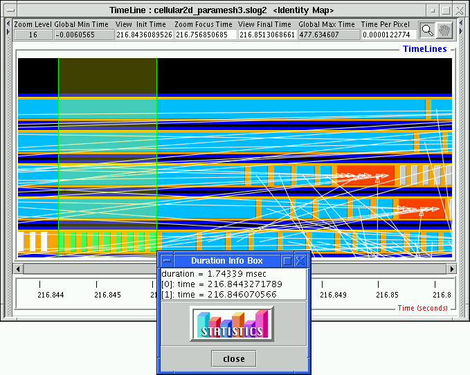

|  |
Duration Info Box is created by right dragging a region of empty space
in the timeline canvas or the time ruler canvas. The dragged region
will be marked by a pair of green lines and is lightly shaded as well.
One of the usages of Duration Info Box is to compare different durations
to see if they are the same. For instance in Figure ![[*]](crossref.png) ,
the 2 Duration Info Boxes mark 2 non-overlap regions on the 3rd timeline
to check if the total duration taken up by the all consecutive small
states within the 2 regions are the same. As shown in the Duration
Info Box, it appears the total durations are the same.
,
the 2 Duration Info Boxes mark 2 non-overlap regions on the 3rd timeline
to check if the total duration taken up by the all consecutive small
states within the 2 regions are the same. As shown in the Duration
Info Box, it appears the total durations are the same.